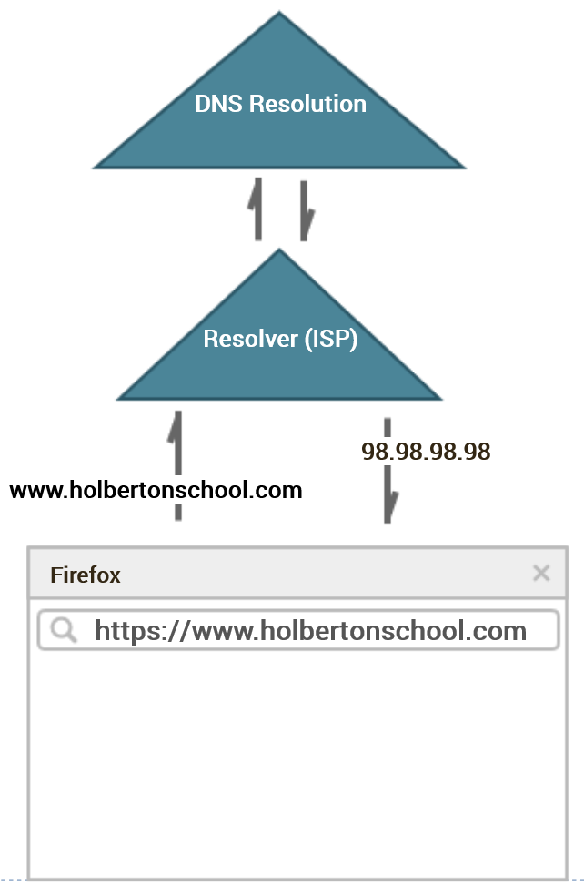
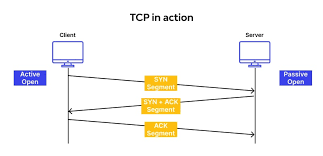
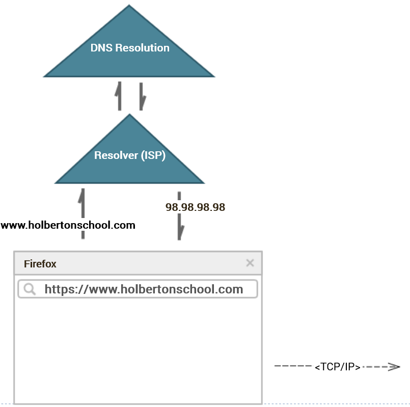
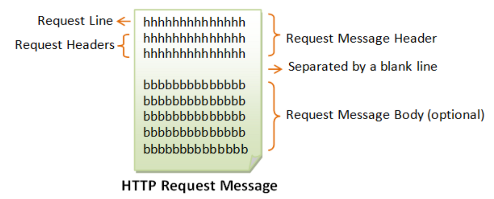
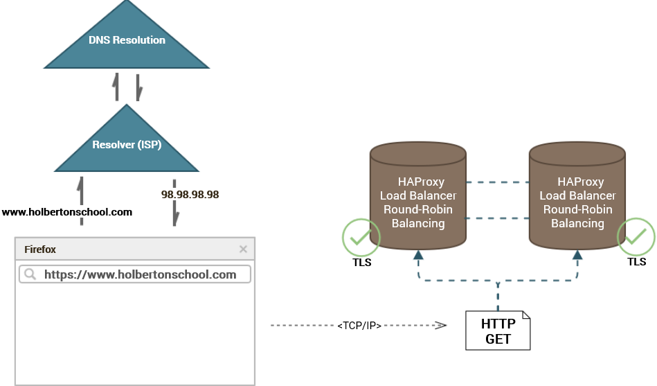
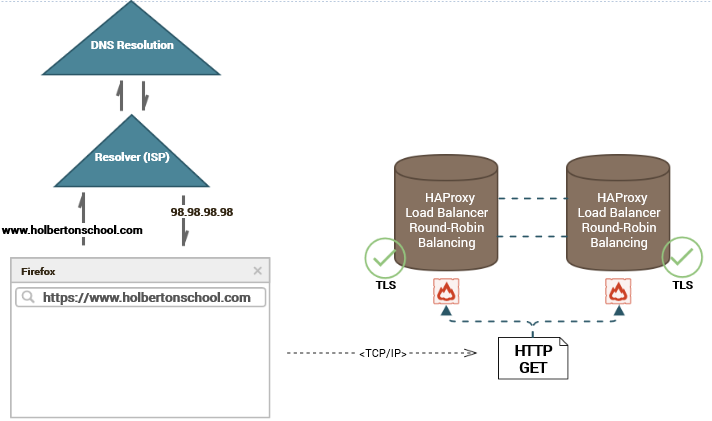

This question is an absolute classic when it comes to interviews for developers. Most think its a simple question and dont give it much thought.before we go into detail lets skim over some terminology we will use before hand.
Server: Another word for a computer or computer program. Can refer to either hardware or software. Servers provide functionality for other devices. In the context of this article, usage of the term “server(s)” will refer to the computer system(s) hosting www.holbertonschool.com.
Also a computer or computer program, but one that can access services and functionalities hosted on a server. Most familiarly, clients are the personal devices — laptops, smartphones, etc. — that we use to access services through the internet, among other things. In the context of this article, usage of the term “client” will refer to the web browser.
Protocol: Or, more specifically, communication protocol — a general term for a system of rules, or method, for transmitting data between two devices. The Open System Interconnections (OSI) model, the conceptual model used to describe telecommunications between computers, consists of a myriad of protocols
At their core, web browsers are simple. They function entirely to take a string of text and return the web page that corresponds with it — nothing more, nothing less. Of course, a web browser can only complete this function if it knows what a given string of text it receives is.
Web browsers function on Internet Protocol (IP) addresses (think of them as the addresses of servers). It is possible to give web browsers exact IP addresses to access websites — in fact, this would save the browser quite a bit of work — however, we humans have a difficult time remembering 4–12+ digit strings of numbers, let alone the dozens upon dozens of them we frequent every day.
Thus, we instead encode IP addresses as domain names, which make up the .com, .net, .gov and many, many other domains we’re commonly familiar with.
They makes web browsing vastly more efficient and convenient; yet, domain names in and of themselves are useless to a web browser, which must decode, or resolve, a given one into its corresponding IP address.
This is when domain extensions come in to play.
What do you do when you are given something you’ve never seen before and asked to describe what it is? You probably examine the given item according to smaller, identifiable features, such as individual details about its looks, feel or functionalities. Web browsers are no different. First and foremost upon receiving the string https://www.holbertonschool.com, the web browser, which we’ll exemplify as Firefox for the purposes of this article, breaks it up like so:
Our example URL is parsed according to the format above as follows:
Protocol — https— the data transfer method to be used between the client and server. In this case, the protocol is HTTPS (HyperText Transfer Protocol Secure).
Hostname — www.holbertonschool.com— the domain name corresponding to the IP address of the server.
Port — the port (think of it like the server’s mailbox) where our request will be sent. Empty in our example URL, but correspondingly implied by the web browser based on the protocol — HTTPS uses port 443.
Path-and-file-name — the name of the file requested and its location in the server’s directory. Also left empty in our example URL, thus implied that we are querying the server at the root /.
In short, our URL specifies that we wish to access the file configured at the root directory of the server hosting www.holbertonschool.com. Further, we are directing the browser to contact this server at port 443 through HTTPS.
After parsing the URL, the web browser does some double-checking on the hostname, www.holbertonschool.com. First, it scans it for any non-ASCII characters, a-z, A-Z, 0-9, . or -. Our given URL is clean, but in the case it contained a weird character, Firefox would use Punycode to encode the URL into a functional string.
Finally, the web browser checks caches. Recall that web browsers are just like us. Humans don’t like repeating work they’ve already done, and again, browsers are the same way. In its cache, your browser keeps a running storage of recent hostnames that it has already resolved.
Firefox first checks its own cache. If it matches a repeated hostname, it pulls out its IP directly. Upon failing there, it will search in one last place — the operating system’s cache. In the case that it fails again, and as we’ll assume for our example, the browser must undergo the DNS resolution process.
Having failed to match the received hostname in either its own or the operating system’s cache, Firefox sends it off to the nearest resolver server (typically your Internet Service Provider) to be resolved into its IP through the Domain Name System.
I’ve briefly introduced the what behind DNS, but hostname-IP DNS resolution is an entire, complex process in and of itself the details of which would distract our efforts here more than anything else.
simply know that the resolver contacts both the top-level domain server (.com, in our case) and domain registrar before successfully resolving the hostname into its corresponding IP address. When it’s all said and done, Firefox knows the IP address corresponding to www.holbertonschool.com — we'll call it 98.98.98.98 in our example (note that this is not actually the IP of the website).
Finally, our web browser is ready to go. Having resolved the IP address associated with www.holbertonschool.com, Firefox proceeds to begin communication with the corresponding server.
The communication between the browser and server occurs over what is referred to as Transmission Control Protocol/Internet Protocol (TCP/IP). This communication protocol is not mandatory — any working protocol goes — but is a standard when it comes to web infrastructure and the OSI model.
TCP, the transport-layer protocol, is responsible for establishing the connection between the client and server. TCP is defined by its reliability — packet (ie. request/response data) delivery in TCP is guaranteed, even if it takes more time. An alternative transport-layer protocol, User Datagram Package (UDP) is faster, but less reliable — packet delivery is not double-checked. UDP is typical of streaming services where instant content takes priority; TCP is used most everywhere else.
NOTE! IP addresses are unique to machines, and represent the network addressing and routing that guide the destination points of TCP.
In the context of our example, Firefox will communicate with the server hosting www.holbertonschool.com over TCP — reliability takes precedence over speed for this static website.
The browser knows the IP address of the server it wants to communicate with and the method of going about that communication, but before going all willy-nilly and striking up a nice conversation out in the open, it first undergoes a security check.
The first thing Firefox sends to the resolved IP address of www.holbertonschool.com is a message containing its Transport Layer Security (TLS) version along with a list of supported cipher algorithms and compression methods. TLS is a symmetric cryptography encryption method used to keep communicated data private, authenticated, and reliable. The method is an improved version of what was originally Secure Sockets Layer (SSL). While TLS is the standard web cryptography protocol today, SSL remains the representative of the “S” in HTTPS, despite its deprecation in 2015.
Upon receiving this initial communication, the server chooses its preferred TLS algorithm and method and responds with a certificate, a security approval including the server’s TLS public key. Back at the client-side, the browser uses this public key to encrypt a pre-master key that is sent back to the server.
If the public key sent to our browser was authentic, then the server is able to decrypt the pre-master key with its TLS private key. Upon proof of successful decryption, the browser and server have effectively established a trusted connection and symmetric method of sending messages back-and-forth. This entire security process is referred to as the TLS handshake, and is responsible for that cool green lock displayed in your browser whenever you connect to a website through HTTPS.
Recall that HTTPS initially came up as the first block parsed from our URL, and represents the protocol of our website request. HTTP stands for HyperText Transfer Protocol, a stateless, asymmetric request-response client-server protocol that over arches TCP/IP. Originally written by the inventor of the internet himself, Tim Berners-Lee, HTTP has persisted as the standard-bearer protocol for internet communication. The most recent version is HTTP/1.1 and is maintained by the World-wide Web Consortium (W3C).
Where TCP/IP defines the method of communication, HTTP defines how computers interact with each other. For instance, after completing the TLS handshake, Firefox sends a HTTP request message to the server. The request message corresponds to a strict format as follows:
The first line, the request line, defines the type of request the browser makes to the server. There are many types of request messages, two such including POST, to submit data to a server, and DELETE, to delete data from one. Our entry of https://www.holbertonschool.com qualifies as a GET message, which acquires a web resource (web page) for a client from a server.
In the header section of HTTP request messages, the browser can specify details of the request, such as if the connection to the server should be terminated immediately or not, or whether the server should store cookies (persisted session information for a given client).
NOTE! The request body is optional, and mostly irrelevant to request messages.
Throughout these first five steps I’ve repeatedly referenced our browser as communicating with the server hosting www.holbertonschool.com. Now, I was not [intentionally] misleading you, I promise, but the truth is, up to this point, we haven’t quite yet interacted with the server hosting our desired web page. Instead, we’ve been interacting with an initial in-between — the load balancer.
To introduce the importance of load balancing, realize that over four billlion people use the internet today. Think about the number of HTTP GET requests sent to a particular website every day, every hour, every minute, and every second, especially for those behemoth websites such as Google or Amazon. Then think about how your personal computer begins to slow down after running just a handful of processes, let alone if it had to manage over 63,000 requests per second.
If you’re thinking that there’s no possible way a single computer could effectively handle that much traffic, you’re absolutely correct. In reality, most all established websites split up traffic across a multitude of servers. Each are configured to serve requests identically, and by splitting requests among them, traffic is handled much more efficiently.
A load balancer is an intermediary responsible for handling this traffic-splitting work. A load balancer is a software that can be configured either on the same server as that hosting web content or on a server all its own. One such common and free load balancer software is HAProxy.
HTTP request traffic is split up by a program such as HAProxy according to a load balancing algorithm. There are various types of load balancing algorithms, each with their own advantages and disadvantages. One such example includes round-robin load balancing, which sends requests to servers in turn according to a queue. Another is least connections, which sends a new request to the server currently handling the least number of connections.
Ideally, a stable website will be configured with multiple load balancers set up as a transparent cluster. Each load balancer in the cluster always knows the status of its companions, and any one can handle a greater share of requests in the case that another goes down.
Let’s update our graphic to visualize this more stable load balancer cluster:
We are very, very close to retrieving our web page. I pinky promise. But, before our GET request is officially, finally received by the host server, the message goes through one last security check — a firewall.
Through the TLS handshake, our browser came to an agreement with the load balancer server as to how to encrypt messages as they are passed back-and-forth. TLS achieves three crucial security purposes — privacy, integrity, and identification — yet it fails to account for a fourth — honesty.
Firewalls are hardware, software, or an implementation of both that filter all traffic coming into and out of a server. TLS is effective for preventing data from being intercepted mid-transmission. Yet, it assumes that received data is coming from a trusted source. Firewalls make no such assumptions, and utilize a combination of packet filters, application gateways, circuit-level gateways and proxy servers to make certain that a packet does not contain viruses or malicious hardware.
Firewalls are relatively straightforward to install, and are typically configured anywhere data is received, including both load balancer and host servers. One such freely available and fantastically-named one on Linux is Uncomplicated Firewall (UFW).
Contextualizing firewalls in our example, at this point, our GET request has already passed one firewall, installed on the load balancer. It will next pass another installed on whichever host server it is distributed to.
Finally!!WE MADE IT.THIS TIME FOR REAL!
Resolved into its IP, transferred over TCP/IP, encrypted by TLS, formatted as HTTP, passed by a firewall, (*huff, huff*) distributed by a load balancer, and passed through another firewall, our initial URL has been received as a HTTP GET request by a server hosting our desired web page.
The host server is a web stack consisting of multiple parts that is traditionally set up along the lines of what is termed the LAMP model. The LAMP model breaks down as follows:
L — Linux — the operating system on which the host server runs. Pick your favorite distribution. We’ll use Ubuntu for our example.
A — Apache — the HTTP web server. This is the software that handles HTTP request/response messages and ultimately delivers the static web page. Apache is the most common HTTP web server used, although others such as Nginx are equally capable.
M — MySQL — the database server. This is the database software, typically SQL-based, that stores information such as user accounts. MySQL is a free and popular one, but again, any database software works. A typical website will be configured with multiple database servers, with one configured as a “primary” database having exclusive write privileges whose changes are echoed out to “replicant” databases only having read privileges. This setup is referred to as a “primary-replica” model.
P — PHP/Python — the application server. Web servers are fine for delivering static, unchanging web pages, but lack the capability of representing dynamic content crucial to modern sites. PHP and Python are two high-level languages supported by web servers that can handle dynamic content, but other languages include JavaScript and Ruby.